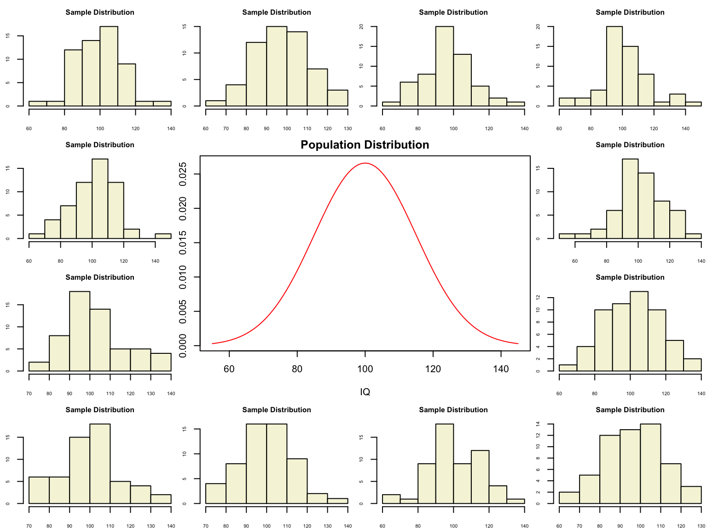
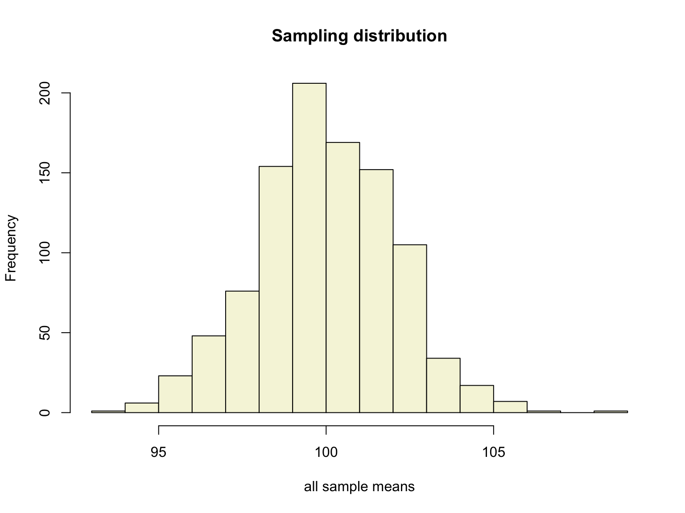
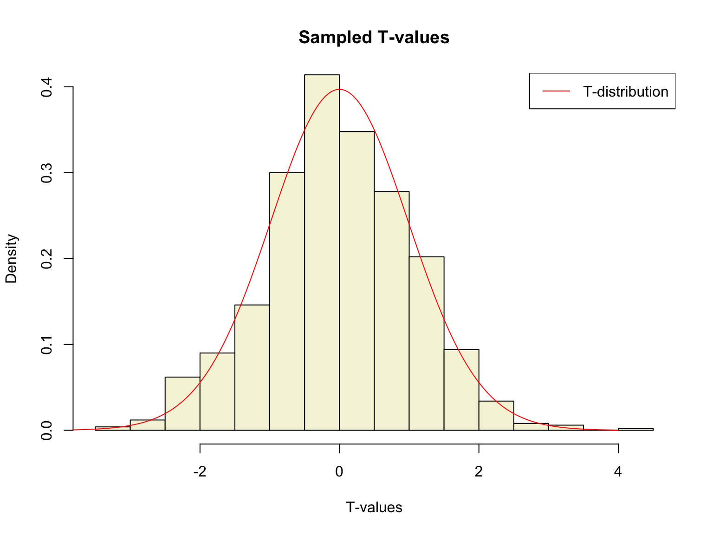
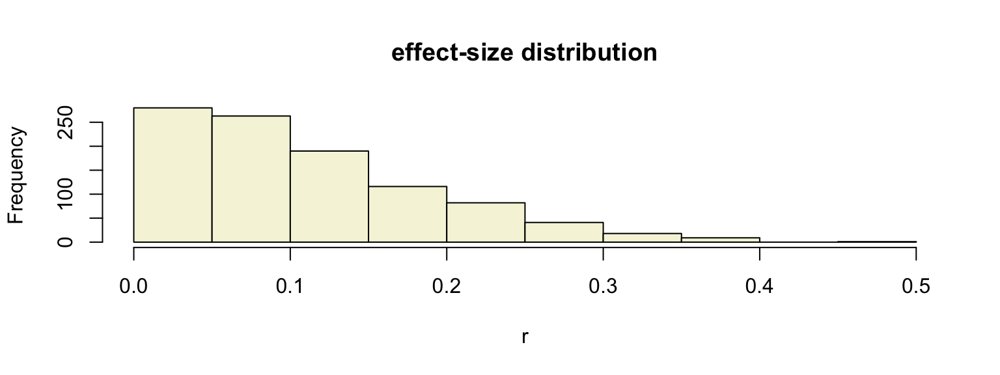
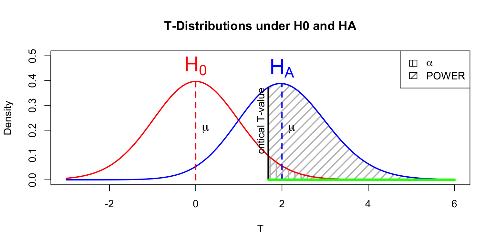
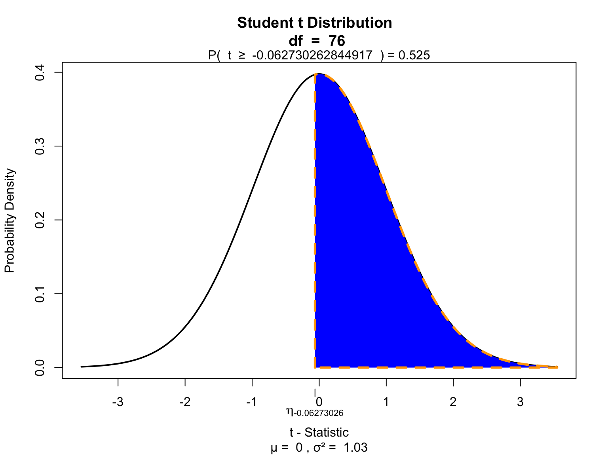

T-distribution and the
One-sample t-test
Klinkenberg
21 sep 2021
T-distribution
Gosset

In probability and statistics, Student’s t-distribution (or simply the t-distribution) is any member of a family of continuous probability distributions that arises when estimating the mean of a normally distributed population in situations where the sample size is small and population standard deviation is unknown.
In the English-language literature it takes its name from William Sealy Gosset’s 1908 paper in Biometrika under the pseudonym “Student”. Gosset worked at the Guinness Brewery in Dublin, Ireland, and was interested in the problems of small samples, for example the chemical properties of barley where sample sizes might be as low as 3.
Source: Wikipedia

Population distribution
layout(matrix(c(2:6,1,1,7:8,1,1,9:13), 4, 4))
n = 56 # Sample size
df = n - 1 # Degrees of freedom
mu = 100
sigma = 15
IQ = seq(mu-45, mu+45, 1)
par(mar=c(4,2,2,0))
plot(IQ, dnorm(IQ, mean = mu, sd = sigma), type='l', col="red", main = "Population Distribution")
n.samples = 12
for(i in 1:n.samples) {
par(mar=c(2,2,2,0))
hist(rnorm(n, mu, sigma), main="Sample Distribution", cex.axis=.5, col="beige", cex.main = .75)
}
T-statistic
\[T_{n-1} = \frac{\bar{x}-\mu}{SE_x} = \frac{\bar{x}-\mu}{s_x / \sqrt{n}}\]
So the t-statistic represents the deviation of the sample mean \(\bar{x}\) from the population mean \(\mu\), considering the sample size, expressed as the degrees of freedom \(df = n - 1\)
A sample
Let’s take one sample from our normal populatiion and calculate the t-value.
## [1] 113.55661 110.32869 104.78017 125.79750 80.46797 90.16822 107.79171 95.05531 104.31656 124.73346
## [11] 118.74236 84.96141 105.31922 93.20169 90.22726 110.46780 109.81236 116.99513 113.53075 107.88133
## [21] 111.07202 71.58929 98.24701 138.05566 107.85918 110.43200 104.55206 87.53459 104.40290 91.13490
## [31] 103.37275 86.89813 88.01206 77.05868 78.81832 60.93756 103.14890 86.49172 110.67063 91.74880
## [41] 83.59801 126.98396 70.56437 107.68650 87.97323 91.65461 71.18692 107.94378 74.86989 110.00004
## [51] 104.90144 99.00946 120.91735 113.33111 95.10936 107.44742
t-value
\[T_{n-1} = \frac{\bar{x}-\mu}{SE_x} = \frac{\bar{x}-\mu}{s_x / \sqrt{n}}\]
## [1] -0.05536624More samples
let’s take more samples.
Mean and SE for all samples
## mean.x.values se.x.values
## [1,] 101.10366 2.043019
## [2,] 101.00109 2.230810
## [3,] 104.73155 1.780262
## [4,] 99.43963 2.082944
## [5,] 101.90236 1.814426
## [6,] 96.54969 2.067791Sampling distribution

Calculate t-values
\[T_{n-1} = \frac{\bar{x}-\mu}{SE_x} = \frac{\bar{x}-\mu}{s_x / \sqrt{n}}\]
## mean.x.values mu se.x.values t.values
## [995,] 99.43248 100 2.136774 -0.2655962
## [996,] 98.74613 100 1.651886 -0.7590536
## [997,] 101.38054 100 1.945887 0.7094646
## [998,] 102.54474 100 2.094830 1.2147734
## [999,] 96.64946 100 1.857363 -1.8039250
## [1000,] 100.22690 100 2.033131 0.1116035Sampled t-values
What is the distribution of all these t-values?

T-distribution
So if the population is normaly distributed (assumption of normality) the t-distribution represents the deviation of sample means from the population mean (\(\mu\)), given a certain sample size (\(df = n - 1\)).
The t-distibution therefore is different for different sample sizes and converges to a standard normal distribution if sample size is large enough.
The t-distribution is defined by:
\[\textstyle\frac{\Gamma \left(\frac{\nu+1}{2} \right)} {\sqrt{\nu\pi}\,\Gamma \left(\frac{\nu}{2} \right)} \left(1+\frac{x^2}{\nu} \right)^{-\frac{\nu+1}{2}}\!\]
where \(\nu\) is the number of degrees of freedom and \(\Gamma\) is the gamma function.
Source: wikipedia

One or two sided
Two sided
- \(H_A: \bar{x} \neq \mu\)
One sided
- \(H_A: \bar{x} > \mu\)
- \(H_A: \bar{x} < \mu\)

Effect-size
The effect-size is the standardised difference between the mean and the expected \(\mu\). In the t-test effect-size is expressed as \(r\).
\[r = \sqrt{\frac{t^2}{t^2 + \text{df}}}\]
## [1] 0.2603778Effect-size distribution
We can also calculate effect-sizes for all our calculated t-values. Under the assumption of \(H_0\) the effect-size distribution looks like this.
## mean.x.values mu se.x.values t.values r
## [995,] 99.43248 100 2.136774 -0.2655962 0.03579004
## [996,] 98.74613 100 1.651886 -0.7590536 0.10181885
## [997,] 101.38054 100 1.945887 0.7094646 0.09522943
## [998,] 102.54474 100 2.094830 1.2147734 0.16164585
## [999,] 96.64946 100 1.857363 -1.8039250 0.23634971
## [1000,] 100.22690 100 2.033131 0.1116035 0.01504691
Cohen (1988)
- Small: 0 <= .1
- Medium: .1 <= .3
- Large: .3 <= .5
Power
- Strive for 80%
- Based on know effect size
- Calculate number of subjects needed
- Use G*Power to calculate

Alpha Power
T = seq(-3,6,.01)
N = 45
E = 2
# Set plot
plot(0,0,
type = "n",
ylab = "Density",
xlab = "T",
ylim = c(0,.5),
xlim = c(-3,6),
main = "T-Distributions under H0 and HA")
critical_t = qt(.05,N-1,lower.tail=FALSE)
# Alpha
range_x = seq(critical_t,6,.01)
polygon(c(range_x,rev(range_x)),
c(range_x*0,rev(dt(range_x,N-1,ncp=0))),
col = "grey",
density = 10,
angle = 90,
lwd = 2)
# Power
range_x = seq(critical_t,6,.01)
polygon(c(range_x,rev(range_x)),
c(range_x*0,rev(dt(range_x,N-1,ncp=E))),
col = "grey",
density = 10,
angle = 45,
lwd = 2)
lines(T,dt(T,N-1,ncp=0),col="red", lwd=2) # H0 line
lines(T,dt(T,N-1,ncp=E),col="blue",lwd=2) # HA line
# Critical value
lines(rep(critical_t,2),c(0,dt(critical_t,N-1,ncp=E)),lwd=2,col="black")
text(critical_t,dt(critical_t,N-1,ncp=E),"critical T-value",pos=2, srt = 90)
# H0 and HA
text(0,dt(0,N-1,ncp=0),expression(H[0]),pos=3,col="red", cex=2)
text(E,dt(E,N-1,ncp=E),expression(H[A]),pos=3,col="blue",cex=2)
# Mu H0 line
lines(c(0,0),c(0,dt(0,N-1)), col="red", lwd=2,lty=2)
text(0,dt(0,N-1,ncp=0)/2,expression(mu),pos=4,cex=1.2)
# Mu HA line
lines(c(E,E),c(0,dt(E,N-1,ncp=E)),col="blue",lwd=2,lty=2)
text(E,dt(0,N-1,ncp=0)/2,expression(paste(mu)),pos=4,cex=1.2)
# t-value
lines( c(critical_t+.01,6),c(0,0),col="green",lwd=4)
# Legend
legend("topright", c(expression(alpha),'POWER'),density=c(10,10),angle=c(90,45))
One-sample t-test
IQ next to you

Models
\[\text{outcome} = \text{model} + \text{error}\]
Compare sample mean
We use the one-sample t-test to compare the sample mean \(\bar{x}\) to the population mean \(\mu\).
Let’s take a different sample and calculate the mean of this sample.
mu = 120
n = length(IQ.next.to.you)
x = IQ.next.to.you
mean_x = mean(x, na.rm = T)
sd_x = sd(x, na.rm = T)
cbind(n, mean_x, sd_x)## n mean_x sd_x
## [1,] 77 119.9091 12.71673Does this mean, differ significantly from the population mean \(\mu = 120\)?
Hypothesis
Null hypothesis
- \(H_0: \bar{x} = \mu\)
Alternative hypothesis
- \(H_A: \bar{x} \neq \mu\)
- \(H_A: \bar{x} > \mu\)
- \(H_A: \bar{x} < \mu\)
Assumptions
- Normal samples distribution
- Measurement level
- Interval
- Ratio
T-statistic
\[T_{n-1} = \frac{\bar{x}-\mu}{SE_x} = \frac{\bar{x}-\mu}{s_x / \sqrt{n}} = \frac{119.91 - 120 }{12.72 / \sqrt{77}}\]
So the t-statistic represents the deviation of the sample mean \(\bar{x}\) from the population mean \(\mu\), considering the sample size.
## [1] -0.06273026Type 1 error
To determine if this t-value significantly differs from the population mean we have to specify a type I error that we are willing to make.
- Type I error / \(\alpha\) = .05
P-value one sided
Finally we have to calculate our p-value for which we need the degrees of freedom \(df = n - 1\) to determine the shape of the t-distribution.
## [1] 76
P-value two sided

Effect-size
\[r = \sqrt{\frac{t^2}{t^2 + \text{df}}}\]
## [1] 0.007195468